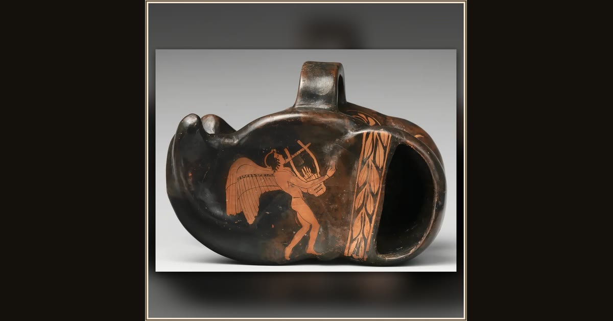

Terracotta vase in the form of an astragal (knucklebone)
Attributed to an artist recalling the Painter of London D 12 · ca. 460 BCE · met
A terracotta vase shaped like a knucklebone bears a winged lyre player, echoing the boys' knucklebone games in the wrestling school (206e) Explore its place in Plato's Dialogues, Lysis, section 17.